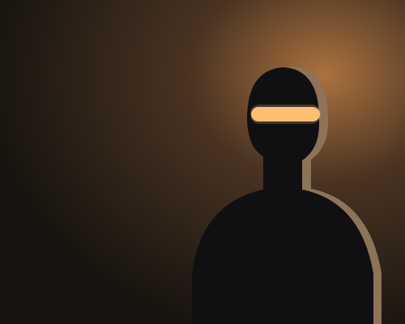
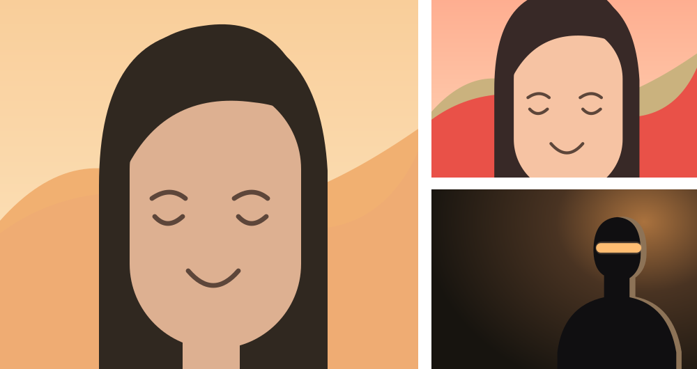

پیشنهاد همکاری
شرح خدمات و زمان تحویل را در یک پیشنویس منظم جمع کن.
دستیار هوشمند برای پیشنهادها، فاکتورها و ایمیلهای روزمرهٔ کسبوکارهای کوچک.
تجربهٔ دمو ←
دستیار هوشمندیک درخواست تازه وارد میشود، پیشنویس ساخته میشود و همکارت آن را بازبینی میکند. هر حرکت را میتوان دنبال کرد.
امتحانش کن ←نوع درخواست رو انتخاب کن و ببین چطور از ورودی به خروجی میرسه.
شرح خدمات و زمان تحویل را در یک پیشنویس منظم جمع کن.
ردیفهای سفارش را به یک فاکتور قابل بازبینی تبدیل کن.
درخواستهای مشابه را گروهبندی کن و لحن پاسخ را خودت بساز.

یکی از کارهای تکراری تیمت رو بنویس تا جریانش رو با هم ترسیم کنیم.